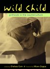
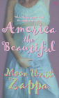

Заппа'zУх!Ой!
русский более или менее регулярный бюллетень для поклонников американского композитора
Frank'а Vincent'а Zappa'ы
Выпуск.26 (19 ноября 2000)
А в это время женщины копали
Год зеленого хвоста на исходе. Можно считать цыплят. Процедура настолько проста, что не нужна даже доярка с ее десятью пальцами интеллекта, вполне достаточно парнокопытного животного, свиньи домашней.
За отчетный период фанаты FZ стали богаче ровно на один компакт и одного писателя.
1 + 1 = 2
О музыкальной новинке мы уже рассказывали восторга не скрывая. Теперь будем докладывать об успехах на фронтах художественной словесности.
На самом деле, девушка с прелестным именем сноповязалки - Лунный Модуль, о который мы тут, помнится, уже однажды толковали без должного уважения и любви попросту взяла и утерла кое-кому самоуверенный нос.
И что обидно, подобной унизительной развязки ничего вроде бы и не предвещало. Клянусь!

Всей этой седьмой воде на киселе и без того худосочной заокеанской кухонной мысли предпослано, однако, предисловие дочери Фрэнка Заппы Moon Unit. Заметки от чистого взволнованного сердца. "Папка, - пишет тридцатилетняя барышня, - конечно, хиппарем не был, наркоту, вообще, на дух не переносил, но тоже, сукин кот, без спроса и нашего младенческого согласия освободил от необходимости врать и соблюдать условности общественной жизни, теперь вот Порше есть, счет в банке есть, домик собственный в Северном Голливуде, пожалуйста, а счастья ни хрена." Короче, обнимемся, сестрички - подопытные кролики, и поплачем.
Хорошее, думалось, дело. Глядишь, соринки-то из глаз и вымоет. На большее, собственно, рассчитывать не приходилось.
Недооценили. Слушали, как мама Gail рассуждает "о позднем зажигании" своего потомства, да ухмылялись. Теперь выясняется, напрасно. Оказалось, что дочка нашего гения, не принужденная соответствовать какой-нибудь гендерной концепции, попадать в теоретический пуант и умничать, не такая уж и набитая дура. Она и пошутить может, и неплохо, подвернулся бы только случай.
Подходящий повод посмеяться. Ну, вот, например, сидит она как-то у факса, ждет чуда, волшебная машина щелкает и из нее давай переть прямо-таки гениальные строчки за подписью любимого "не жалею, не зову, не плачу, все пройдет как с белых яблонь дым". Весело, правда? То ли дальше будет, прикидываешь с кривой рожей, листая странички только-только появившегося на свет полу-автобиографического романа Мун Заппа America The Beautiful (британское издательство Review).

Попросту автор, которого сразу и немедленно начинаешь отождествлять с простофилей по имени America Ludmilla Odin Thron, дочерью гениального художника, писателя, актера, а заодно и советского невозвращенца Бори Тронова, пишет без всяких там затей о том, что думает и чувствует. Это называется искренность.
В общем, не полужидкие девичьи сопли завязки и развязки, а сквозящий в каждом слове, образе и шутке, конечно, шутке, дух неподдельного сиротства и превращает книжку Мун Юнит в настоящее художественное произведение, симпатизировать вдруг начинаешь, сопереживать... Безотцовщина при живом отце. Вот ведь, оказывается, как можно... Слушать его, но не понимать. Видеть его, но не сметь тронуть. Любить, но не иметь права признаться.
The Thing I Hate about My Father:
|
The Thing I Love about My Father:
|
В общем удивила девушка и порадовала. Папку не осрамила. Красиво выступила. Умница.
Пусть даже ни слова о музыке, собственно, и не написала. Не беда. Потому, скажу вам по великому секрету, что другая родственница FZ, наша добрая знакомая, славная Candy Zappa, тоже пишет книгу и, кажется уже почти сваяла, и не роман, полный вымыслов и домыслов, а чистого сливочного масла воспоминания о детстве, отрочестве и юности своего брата Фрэнка Винсента.
То есть, наши два пальца и в следующем году, розового хобота, в алгебраической козе еще разочек растопырятся. А будет математика, будут и песни. Во всяком случае, надежда остается!
Искренне Ваш, Владимир Советов
http://www.arf.ru/
| Домой | Заппа'zУх!Ой! | Поиск | Хозяин |